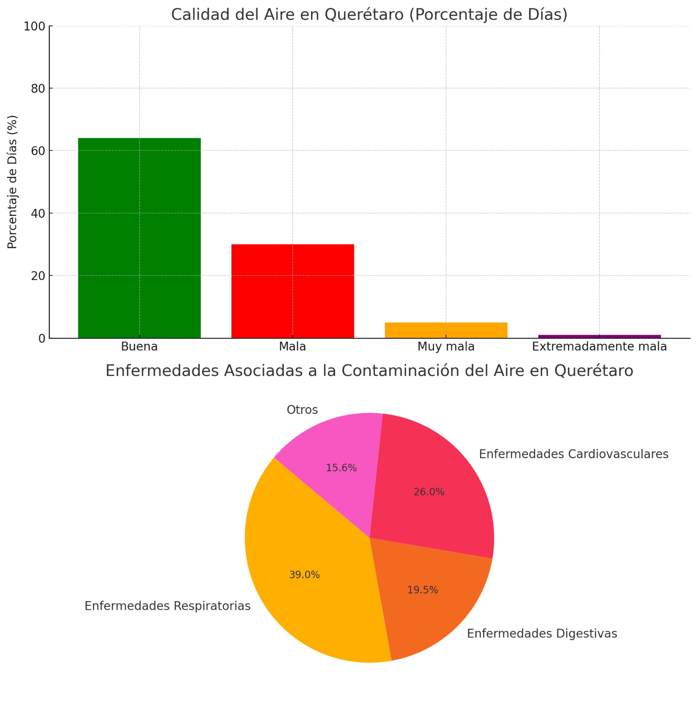

La contaminación del aire afecta la salud humana, especialmente los sistemas respiratorio y cardiovascular.
En Querétaro, las enfermedades crónicas no transmisibles, como la diabetes y las cardiovasculares, son las principales causas de muerte.
La diabetes afecta al 10-12% de los adultos, y la hipertensión y el colesterol alto elevan el riesgo de problemas cardíacos.
Normas Oficiales Mexicanas sobre la calidad del aire
Las Normas Oficiales Mexicanas (NOMs) actúan como indicadores
que nos permiten medir la cantidad de contaminantes en el aire y
cuando se vuelven dañinos para la salud:
Estos limites son: NOM-025-SSA1-2014 (PM10 y PM2.5):
PM10: 75 µg/m³ (24 h), 40 µg/m³ (promedio anual).
PM2.5: 45 µg/m³ (24 h), 12 µg/m³ (promedio anual).
NOM-020-SSA1-2014 (Ozono O₃):
0.070 ppm (8 horas).
NOM-021-SSA1-2014 (Monóxido de carbono CO):
11 ppm (8 horas).
NOM-022-SSA1-2014 (Dióxido de azufre SO₂):
0.075 ppm (1 hora), 0.025 ppm (24 horas).
NOM-023-SSA1-2014 (Dióxido de nitrógeno NO₂):
0.210 ppm (1 hora), 0.053 ppm (promedio anual).
Estas normas fueron los indicadores que ocupamos
para representar la cantidad de diferentes contaminantes
en la ciudad de queretaro a lo largo de 5 años. Fuente: https://www.gob.mx/inecc/documentos/investigaciones-2017-2013-en-materia-de-contaminacion-y-salud-ambiental-rev1?state=published
Impacto de la creciente contaminacion del aire en la poblacion Queretana.
Los factores de riesgo y enfermedades que actualmente Querétaro sufre son bastantes, introduciré las que tienen una directa relación con la contaminación del aire, y por consiguiente afectan directamente a la comunidad queretana, en caso de que la contaminación del aire continúe estas se verán mas graves con el paso de los años y a su vez provocara riesgos sanitarios:
Obesidad: Mas de un 30% sufre de sobrepeso u obesidad y va en crecimiento, la gente que sufre esta condición se vuelve mas susceptible a experimentar problemas relacionados con otras enfermedades
Infecciones respiratorias (IRAs): incluyen faringitis, bronquitis y estas afectan mayormente a niños y ancianos.
Asma: el asma es una enfermedad que afecta a personas de distintas edades, siendo una enfermedad con bastantes complicaciones y difícil de curar
Enfermedades infecciosas: las infecciones son problemas un tanto mas controlados, sin embargo, siguen sufriendo complicaciones en tanto a su tratamiento en algunos casos entre estas esta el dengue, que es un problema con gran incidencia en Qro.
Infecciones Gastrointestinales: estas son comunes en áreas urbanas por la contaminación y aglomeración de insectos y agentes extraños portadores de infecciones.
Enfermedades mentales: Se ha comprobado que las enfermedades mentales proliferan gracias a diversos factores y uno de ellos es la contaminación.

Calidad del Aire en Querétaro (Porcentaje de Días).Fuente:INEGI
Contaminación del Aire en Querétaro
Querétaro enfrenta desafíos significativos en cuanto a la calidad del aire:
Las principales fuentes de contaminación son el tráfico vehicular, la industria y la construcción.
Las partículas PM2.5 y PM10 son los contaminantes más preocupantes en la ciudad.
El ozono también representa un problema, especialmente durante los meses más cálidos.
Impactos en la Salud
La contaminación del aire en Querétaro está asociada con:
Aumento de enfermedades respiratorias como asma y bronquitis.
Mayor riesgo de enfermedades cardiovasculares.
Impactos negativos en el desarrollo cognitivo de los niños.
Medidas de Mitigación
El gobierno de Querétaro ha implementado varias medidas para mejorar la calidad del aire:
Promoción del uso de transporte público y bicicletas.
Regulaciones más estrictas para las emisiones industriales.